Конструкции урока:
| ID | Construction | Illustration |
|---|---|---|
| 706 | Аdj-Nom Cop NP-Nom, правда (ведь)? | Красивая девочка, правда? |
| 2281 | Cl, не правда ли? | Интересный художник, не правда ли? |
| 692 | Cl, а NP-Nom как думать-Prs? | Мне кажется, ему не идёт этот костюм, а ты как думаешь? |
| 693 | а NP-Nom не думать-Prs, что Cl? | А ты не думаешь, что это слишком дорого? |
| 2003 | по-моему, Cl | По-моему, мы проехали нашу остановку. |
| 2276 | Cl, по-твоему /по-вашему? | Сколько, по-твоему, это может продолжаться? |
Adj = adjective (прилагательное)
Nom = Nominative case (номинатив)
Cop = copula verb быть (связочный глагол)
NP = noun phrase (существительное)
Cl = clause, sentence (предложение)
Prs = present tense (настоящее время)
Русский конструктикон https://constructicon.github.io/russian/
а.
Дочь:
— Оля пригласила меня к себе на день рождения. Что мне надеть, как думаешь?
Мама:
— У тебя есть чудесное красное платье, правда ведь? Я думаю, можно надеть его.
Дочь:
— А как по-твоему, к нему подойдут мои светлые туфли?
Мама:
— Ты не думаешь, что в кроссовках или кедах тебе будет удобнее? По-моему, сейчас модно носить кроссовки с платьем. Вы же будете много танцевать, не правда ли?
Дочь:
— Ты права. Надену те белые кроссовки, которые ты мне подарила на Новый год. Спасибо за идею!
б.
— Ксюша сегодня очень хорошо выглядит, не правда ли?
— По-твоему, ей идёт новая причёска?
— Очень идёт, а ты как думаешь?
— Конечно! По-моему, чёлка* ей к лицу.
чёлка* — English: bangs (of hair); Norwegian: pannelugg
|
Cl, а NP-Nom как думать-Prs? Мне кажется, ему не идёт этот костюм, а ты как думаешь? |
а NP-Nom не думать-Prs, что Cl? А ты не думаешь, что это слишком дорого? |
| Спрашиваем мнение собеседника | Формально спрашиваем мнение, а на самом деле хотим привести дополнительный аргумент. Слово не не передаёт отрицания! |
| We ask for our interlocutor’s opinion | We formally ask for an opinion, but in fact we want to give an additional argument. The word не ‘not’ does not convey negation! |
| Når vi spør etter samtalepartnerens mening | Formelt sett spør vi etter samtalepartnerens mening, men egentlig ønsker vi å underbygge vår eget resonnement med ytterligere et argument. Ordet не ‘ikke’ er ikke nektende! |
1. эти брюки тебе уже малы? Давай купим тебе новые брюки.
2. Думаю, нам лучше не ехать на этом автобусе, а подождать следующий, ?
3. Почему ты не сказал мне о том, что собираешься прийти в гости? я могу быть не дома?
4. Я хочу покрасить волосы в розовый цвет. По-моему, мне пойдёт, ?
5. Почему ты хочешь быть похожей на Адель? твоя собственная внешность намного интереснее?
6. Я так волнуюсь из-за экзамена. Не уверен, что я сдам его, ?
Образец:
Странно, что ты хочешь идти на стрижку к новому парикмахеру. ___________________ (ты / результат может тебе не понравиться)?
->
А ты не думаешь, что результат может тебе не понравиться?
1.
— У вас такая хорошая фигура! Как вам повезло!
—____________________________ (вы / это благодаря спорту)?
2.
Я слышал, твоя сестра хочет стать стилистом. ____________________________ (она / для этого надо учиться)?
3.
Не понимаю, зачем твой брат купил вторую машину. __________________________ (он / это плохо для экологии)?
4.
В Тромсё люди даже зимой ходят без шапки. Интересно, ______________________ (они / они могут заболеть)?
Образец
У Алины весёлая улыбка.
->
У Алины весёлая улыбка, правда?
У Алины весёлая улыбка, правда ведь?
У Алины весёлая улыбка, не правда ли?
1. У Олега хитрый взгляд.
2. Мне к лицу зелёный цвет.
3. Настя очень красивая.
4. У Кирилла приятное лицо.
5. Пете к лицу эта рубашка.
6. Ваня очень симпатичный.
7. Алексей выглядит моложе своих лет.
Образец:
— По-моему, у Лёши карие глаза.
— А по-моему, зелёные.
Собеседник 1:
Собеседник 2:
| 1. Она за собой не следит: совсем седая ходит. 2. Удивительно: он такой полный, а рекламирует спортивную одежду. 3. Что ты понимаешь в еде? Ты такой худой! 4. Будь осторожен: в машине впереди нас за рулём блондинка. 5. Почему ваша Света всё время ходит в джинсах? Она же девочка! |
а. По-твоему, полные люди не могут заниматься спортом? б. По-твоему, блондинки плохо водят машину? в. По-вашему, худые не любят вкусно поесть? г. По-вашему, девочка должна быть в платье? д. По-твоему, волосы обязательно красить? |
| Конструкция | Вариант конструкции |
| Cl, а NP-Nom как думать-Prs? | ... , а ты как думаешь? |
| а NP-Nom не думать-Prs, что Cl? | А ты не думаешь, что ...? |
| Аdj-Nom Cop NP-Nom, правда (ведь)? | ... , правда ведь? |
| Cl, не правда ли? | ..., не правда ли? |
| Cl, по-твоему/по-вашему? | ..., по-твоему? |
| по-моему, Cl | По-моему, ... |
Образец:
— Эти девушки не похожи. У Иры волосы прямые, а у Жанны кудрявые, не правда ли?
— Правда, но, по-моему, они похожи. Ты не думашь, что у них у обеих длинные волосы?
— Да, но у Жанны волосы тёмные, а Ира блондинка, правда ведь?
Жанна |
Ира |
Дэвид |
Алекс |
Лина |
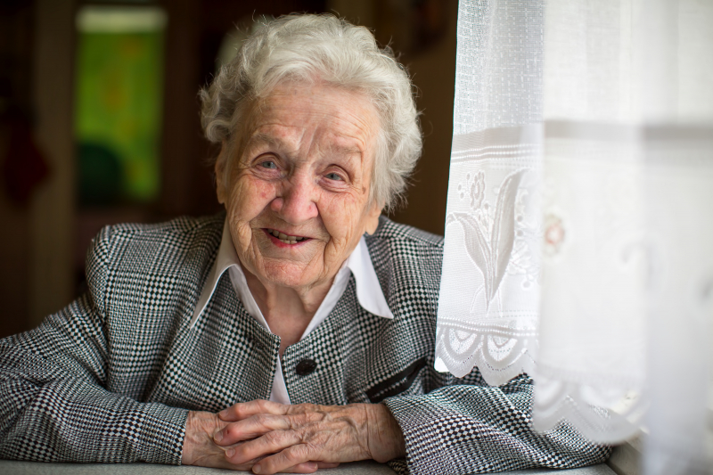 Маргарита |
| 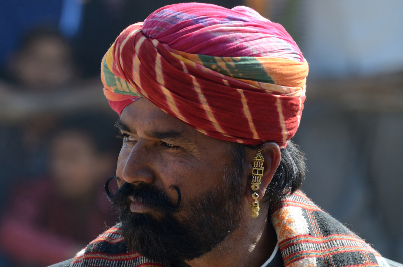 Амрит |
Николай |
| Конструкция | Вариант конструкции |
| Cl, а NP-Nom как думать-Prs? | ... , а ты как думаешь? |
| а NP-Nom не думать-Prs, что Cl? | А ты не думаешь, что ...? |
| Аdj-Nom Cop NP-Nom, правда (ведь)? | ... , правда ведь? |
| Cl, не правда ли? | ..., не правда ли? |
| Cl, по-твоему/по-вашему? | ..., по-твоему? |
| по-моему, Cl | По-моему, ... |
Образец:
A: — А это семья моего деда. Он в центре, с усами. У него строгий взгляд, правда ведь?
Б: — Ага! По-моему, он очень серьёзный. А что за мужчина стоит слева?
А: — А ты как думаешь? Это мой отец. А рядом с ним, справа, моя мама. Она очень красивая, правда ведь?
Б: — Да! А ты есть на этой фотографии?
а.
б.
в.
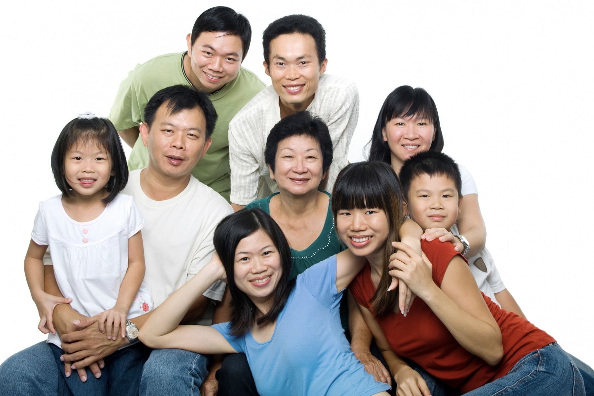
г.
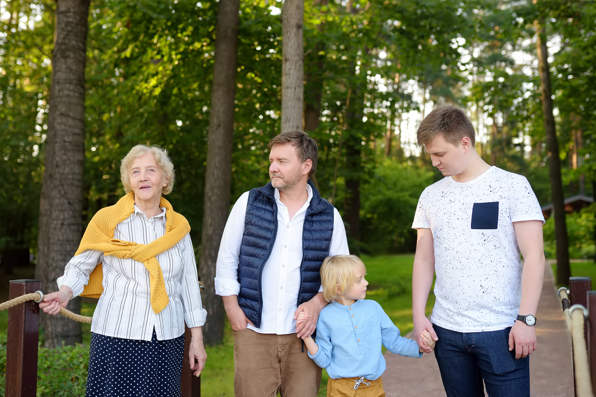
д.
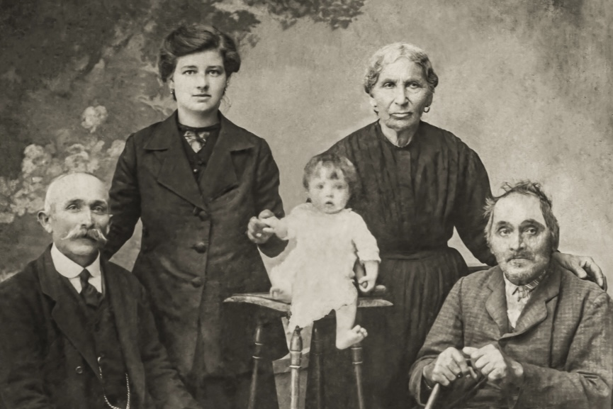
е.
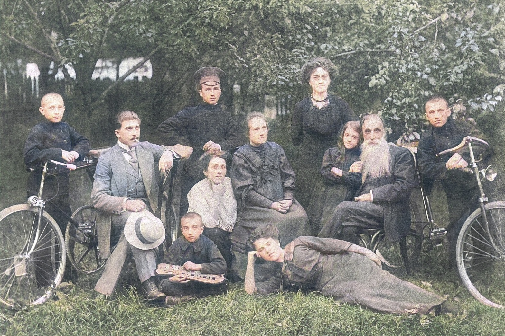
| Узнать мнение | Выразить своё мнение |
|
|
Роли:
Образец:
— Как по мне, Джульетту должна сыграть Джейн.
— А ты не думаешь, что она для этой роли слишком старая? На мой взгляд, Джульетту должна сыграть Оливия: она молодая и красивая.
— Но Джульетта не может быть блондинкой, не правда ли?
— По-твоему, мы не можем покрасить ей волосы или надеть парик?
Джессика |
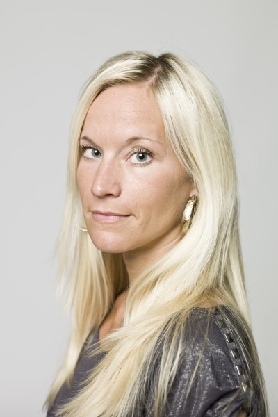 Джейн |
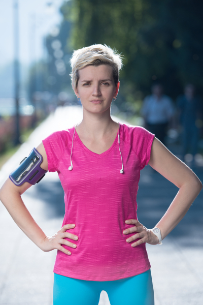 Оливия |
Николь |
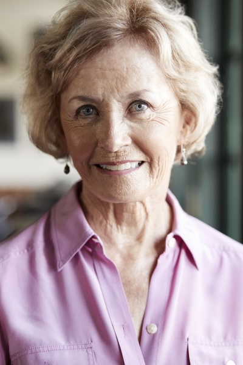 Сара |
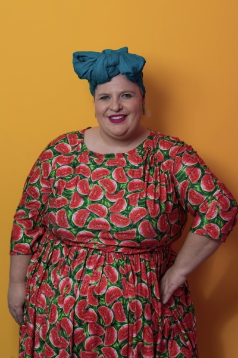 Анжелика |
Рольф |
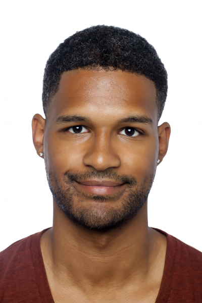 Саймон |
Рикардо |
Крис |
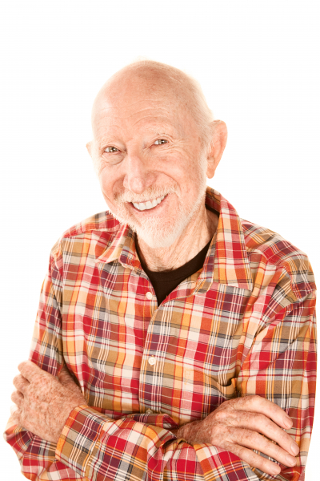 Джордж |
Антуан |
— Хочу завтра красиво одеться, накраситься и сходить в парикмахерскую. К первому свиданию нужно как следует подготовиться, правда ведь?
— Честно говоря, __________________________________________________. По-моему, ___________________________________________________________.
— Мне кажется, первое впечатление — это очень важно.
— А ты не думаешь, что ___________________________________________________________?
— Да, не главное. Но с красивым человеком и разговаривать приятнее, не правда ли?
— На мой взгляд, ___________________________________________________________.
— По-твоему, я должна прийти на свидание в джинсах и без макияжа?
— Как по мне, ___________________________________________________________ .